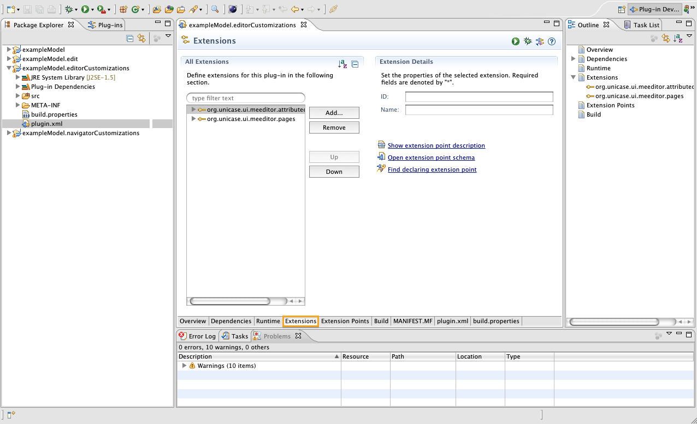

This tutorial will explain how to register a model to the ECP. In previous tutorials, we have already started the ECP without explicitly naming the model to be used. This resulted in the application having to guess the right model. Since in our case there was only one model in the workspace (the example model), the application always chose the correct model. But in general, it is better to register the model to be used to the application.
In the following, we will again use the example model to demonstrate the steps.
Step 1: Open the Extensions viewOpen the plugin.xml file of the project that you want to register the model for. In this case, we will use the project example.Model.editorCustomizations. Make sure that the Extensions tab at the bottom is activated.

Step 2: Add new extensionClick on the Add... button, select the org.eclipse.emf.ecp.model.ecppackage and press Finish.
Step 3: Enter model URIThe only information needed by the ecpModelPackage extension is the URI of the modelPackage to be used.
You can get the model URI by navigating to the root node of your ecore model. In this example, you can find the ecore model with the name library.ecore in the model folder of the project exampleModel. Open it and collapse the view until the root node is visible. Open its Properties view by double clicking and find the model URI. Copy it into the textbox of the ecpModelPackage extension and you are done. The library.ecore model has now been registered to the project exampleModel.editorCustomizations.